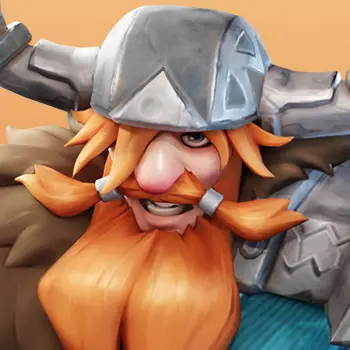
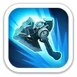
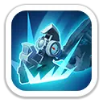
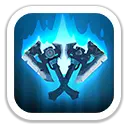
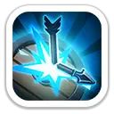
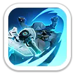
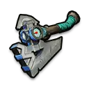

Ледяная ярость
Провоцирует ближайших противников атаковать Магнуса и наносит им урон каждые 0,5 секунды в течение 3 секунд.
60% / 66% / 72% / 78% / 84% атаки за тик

Танк передней линии · +25% атаки войск · сильный участник сборов
Магнус — пехотный герой 9 поколения с упором на выживаемость, контроль и усиление всей армии. В Освоении он провоцирует врагов и режет защиту, а в Экспедиции даёт стабильные +25% атаки всем дружественным войскам.
Максимальные базовые значения Магнуса 9 поколения.
На Арене Магнус стягивает огонь на себя, наносит продолжительный урон и снижает защиту цели.
Провоцирует ближайших противников атаковать Магнуса и наносит им урон каждые 0,5 секунды в течение 3 секунд.
60% / 66% / 72% / 78% / 84% атаки за тик

Бросает топор в героя, наносит разовый урон и оставляет рану с дополнительным уроном в течение 3 секунд.
100/110/120/130/140% + 50/55/60/65/70% атаки

Обычные атаки с вероятностью 30% наносят дополнительный урон и на 2 секунды снижают защиту цели.
+50/55/60/65/70% урона · Защита −5/10/15/20/25%
Именно здесь Магнус становится особенно ценным для сборов и командного PvP.

Постоянно повышает атаку всех дружественных войск.
+5% / +10% / +15% / +20% / +25%

При атаке пехота Магнуса с вероятностью 40% повышает свою защиту на 1 ход.
+10% / +20% / +30% / +40% / +50% защиты

Снижает урон по дружественной пехоте и увеличивает урон дружественных стрелков.
Урон по пехоте −2/4/6/8/10% · урон стрелков +2/4/6/8/10%

На максимуме: +1 600 атаки, +2 088 защиты, +31 319 здоровья, +232% летальности пехоты и +232% здоровья пехоты.
Одна из лучших ролей Магнуса: стабильные +25% атаки всем дружественным войскам.
Высокое здоровье, защита пехоты и +15% здоровья обороняющихся войск от эксклюзивного снаряжения.
Провокация, снижение защиты и высокая собственная живучесть делают его сильным фронтовиком.
Очень хороший участник сбора благодаря +25% атаки, но не лучший кандидат на роль лидера.
Магнус — сильный танк 9 поколения для PvP, гарнизона и Арены, а «Неистовство» делает его отличным участником сборов и Свирепого медведя. Для F2P он не первый приоритет из-за Зала героев: сначала обычно выгоднее закрыть Фреда через Колесо удачи. Для развитого аккаунта Магнус даёт мощную связку выживаемости и командного усиления.